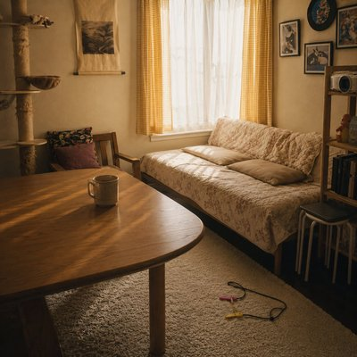

During six weeks of caring for two cats in a friend's home, the narrator discovers that trust looks different in each of them. Bao approaches readily, while Lee-Kway keeps her distance, sometimes accepting an offered hand and sometimes choosing to walk away. Neither response can be demanded or hurried.
“My Hand Will Still Be There” is about learning to respect the pace at which trust develops. The hand remains offered, without expectation or disappointment becoming a reason to withdraw it. There's no guarantee that tomorrow will bring a change, and no way to know which small moment might matter.
Sometimes, caring for someone means knowing when to reach out—and being willing to leave the choice to them. The promise isn't that trust will come. It's that the hand will still be there.
Bao finds my hands like he always has He never has to wait He leans in close without a doubt, like nothing ever changed Likui never comes on her own I cross the room instead Sometimes my hand can stay Sometimes she slips away Bao is already here Likui is still deciding The room grows smaller without a sound So I leave my hand where it is Not asking anyone to stay Not asking anyone to leave If trust has its own time, I'll let it find mine My hand will be there Some days I think I understand the shape of her trust Some days I lose it before I even see it Bao stays longer than I expect Likui leaves sooner than I hoped I never know which moment mattered Nothing is broken Nothing stands still The silence changes before they do So I leave my hand where it is Not asking anyone to stay Not asking anyone to leave If trust has its own time, I'll let it find mine My hand will be there Maybe trust is slower than I am Maybe I'm slower than I think Maybe tomorrow won't look any different Maybe that's never been the point So I leave my hand where it is The rest is never mine to choose Bao will find me Likui will decide My hand will still be there